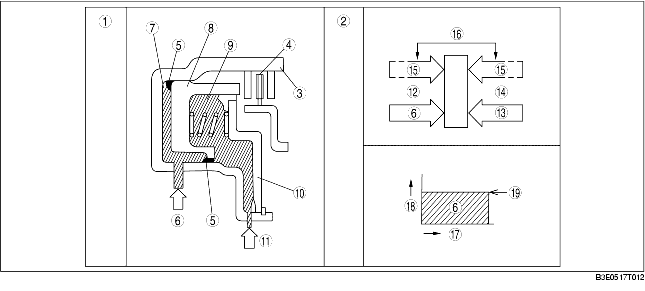

Quando la frizione non è in pressione
• Quando il tamburo della frizione ruota, la forza centrifuga spinge la quantità residua di fluido ATF presente nella camera della frizione a premere contro il pistone. Tuttavia, la forza centrifuga spinge anche il fluido ATF presente nella camera della frizione a bilanciamento centrifugo, a rimandare indietro il pistone. Ne consegue che le due forze si annullano a vicenda per cui il pistone rimane fermo, impedendo così l'innesto della frizione.
Quando la frizione è in pressione
• Quando la camera della frizione è messa in pressione, la pressione della frizione sovrasta la pressione dell'olio e l'azione della molla della camera della frizione a bilanciamento centrifugo opposta, spingendo il pistone ad innestare la frizione. Siccome la forza centrifuga che agisce sulla pressione esercitata sulla camera della frizione viene annullata da un'altra forza centrifuga, che agisce sul fluido ATF presente nella camera della frizione a bilanciamento centrifugo, si elimina l'effetto centrifugo prodotto dalla rotazione del tamburo della frizione. Di conseguenza, la forza di spinta del pistone rimane stabile in tutte le marce conferendo grande fluidità alle cambiate.

.